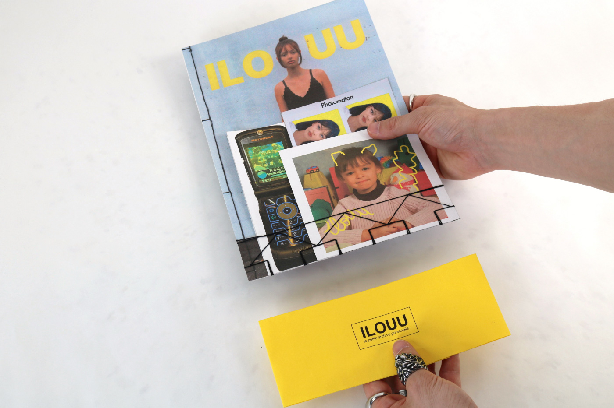
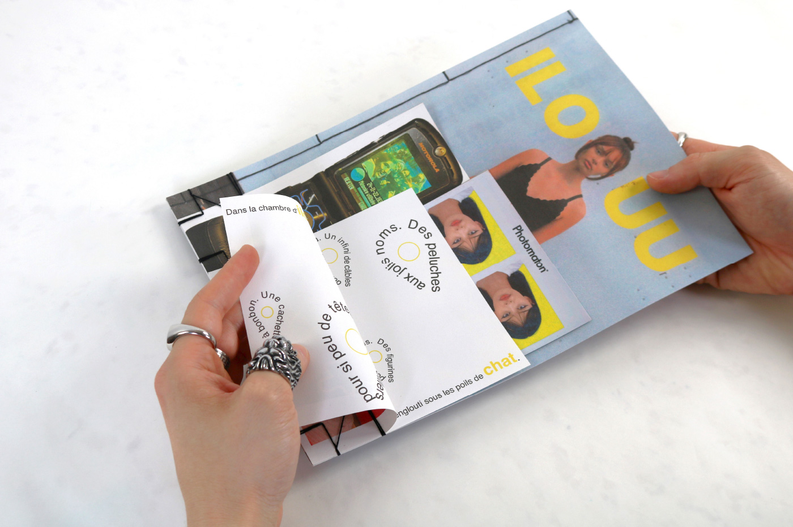
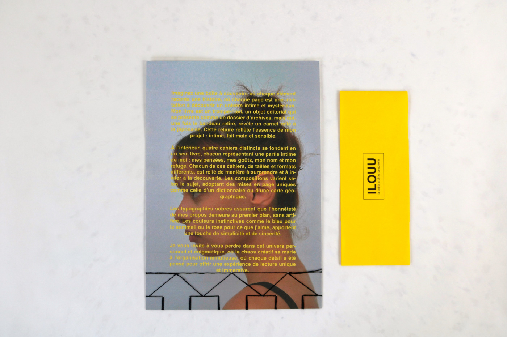
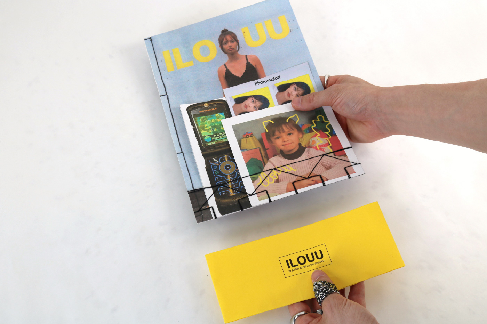
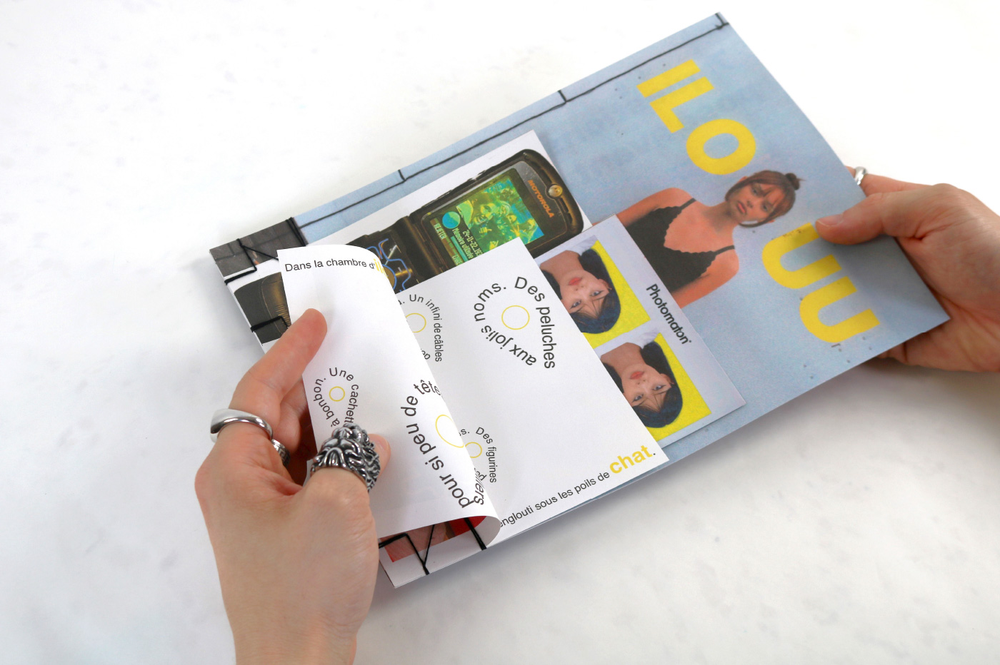
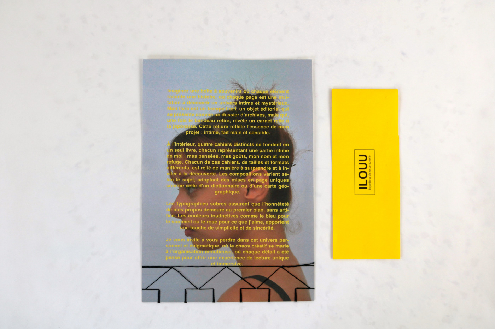

Ce projet consiste en la conception d’un objet éditorial basé sur le thème des listes, où sections, formats et structures diverses explorent l’organisation sous toutes ses formes. J'ai choisi de faire de cet objet une exploration personnelle, inspirée des boîtes à souvenirs et des archives intimes, pour créer un univers énigmatique et introspectif.
Cet objet éditorial se présente comme un trompe-l'œil composé de quatre cahiers distincts, où chacun représente un fragment intime de moi-même — pensées, goûts, nom et refuge.
Pages et composition, sont soigneusement conçues pour surprendre, créent un parcours immersif dans un univers personnel où se rencontrent chaos créatif et organisation minutieuse.
 




